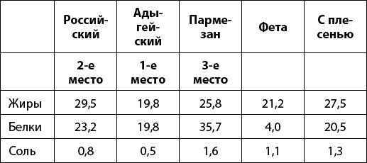

О силе и полезности разных продуктов. Сыры.

Этот продукт известен человечеству более 7000 лет. Его воспевал Гомер в своей «Одиссее», древние египтяне помещали его в гробницы фараонов, а римляне привозили из завоевательных походов не только драгоценности, но и целые телеги этого лакомства. И в наше время этот продукт есть практически в каждом доме. Речь идет о сыре. Согласитесь, многие просто не могут жить без этого продукта!
При выборе сыра в магазине нужно быть внимательным. Ведь этот популярный продукт часто подделывают. И вместо вкусного натурального сыра можно купить странную смесь из растительных масел, красителей и консервантов. Далеко не всегда то, что на вкус кажется натуральным, является им на самом деле.
Если сыр залежался на складе, то его консистенция будет слишком мягкой, из кусочков лежалого сыра будет выделяться жир, это особенно заметно, когда он расфасован в вакуумную упаковку, на полиэтилене появятся жирные разводы.
Надавите на кусок сыра. Если из него вытекает жидкость – сыр просрочен.
При покупке сыра на развес нужно внимательно осмотреть головку сыра. Она должна быть равномерно окрашена. Если вы заметите, что в центре продукт имеет желтый цвет, а по краям белесый, значит, была нарушена технология производства или правила хранения. От покупки такого продукта лучше воздержаться.
Если есть возможность, хорошо бы пощупать головку сыра: свежий сыр высокого качества немного пружинит, а в самом центре сердцевина мягкая.
Посмотрите на края сыра. Именно по ним главным образом определяется качество продукта. Когда на корке сыра находится много трещин, то на его поверхности может образоваться плесень. Поэтому, выбирая сыр, нужно обращать внимание именно на его поверхность, которая не должна быть заметно влажной, пересохшей и/или потрескавшейся.
Еще нужно посмотреть на дырочки-глазки. Хаотичный рисунок разных по форме и размерам глазков свидетельствует о том, что при изготовлении применялось некачественное молоко.
Изучите состав. В состав натурального продукта должны входить только молоко, закваска молочнокислых микроорганизмов и сычужный фермент или другие свертывающие молоко препараты – ферменты, но только животного происхождения. В составе сыра допускаются соль и хлористый кальций.
Часто в поддельных сырах используют микробные ферменты. Они обычно бывают трансгенными, и такие сыры часто не требуют созревания – такой продукт никак нельзя назвать натуральным.
Так называемые «легкие» сыры, изготовленные по интенсивной технологии, не являются натуральными. В процессе производства некоторая часть молока, входящего в состав сыра, заменяется более дешевыми растительными жирами. Помните: покупая так называемый «легкий» сыр, вы приобретаете суррогат из вредных растительных жиров, но платите за него как за натуральный продукт!
Даже в обычные сыры нечестные производители добавляют растительные жиры, например вредное пальмовое масло. Но существует тест, который поможет выявить подделку.
Отрежьте кусочек сыра и оставьте его при комнатной температуре на несколько часов. Если он стал на ощупь влажным, значит, в нем присутствуют растительные масла.
В мире существует более 500 видов и более 2000 сортов сыра. Однако до сих пор нет их единой классификации. В разных странах выпускают сыры с одинаковыми названиями, но по разным технологиям. Все они настолько различны по форме, цвету, вкусу и запаху, что удовлетворят любые запросы.
Несмотря на огромное количество наименований сыров, из всего этого многообразия можно выделить приблизительно лишь 25 главных видов сыра. По способу выработки (их и того меньше) они подразделяются на плавленые, твердые, полутвердые, мягкие, рассольные и сыры с плесенью. Итак, давайте выберем самый полезный сыр из 5 номинантов на это звание, достаточно хорошо известных в России, – это сыр российский, сыр адыгейский, пармезан, фета и сыр с плесенью. Сравним их по трем показателям – количеству жиров, белков и соли (в граммах на 100 г сыра).
Жиров должно быть мало, чтобы не повышать риск ожирения и атеросклероза. Белков больше – потому что белок ускоряет обмен веществ. Соли также должно быть меньше, потому что чем больше соли, тем больше отеков. Да и давление может повыситься.

Победителем стал сыр адыгейский! В нем мало жиров и соли. По белку он существенно уступает лишь пармезану, зато по двум другим показателям он уверенно лидирует!
На втором месте сыр российский. В нем достаточно много жиров и соли. Но зато и много белков, что хорошо.
На третьем месте – твердый сыр пармезан. В нем многовато жиров и очень много соли. Но зато и много белка.